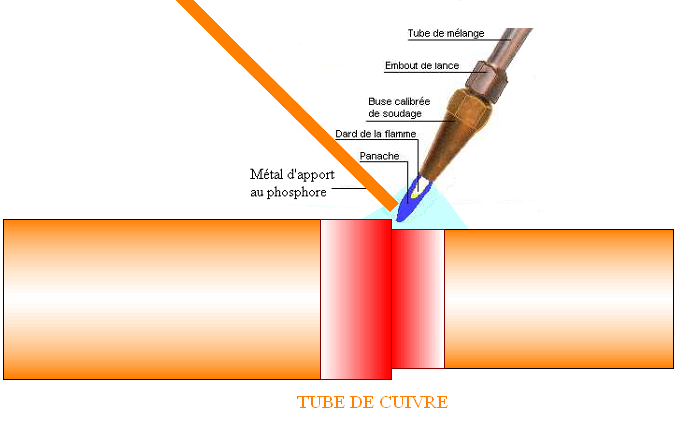
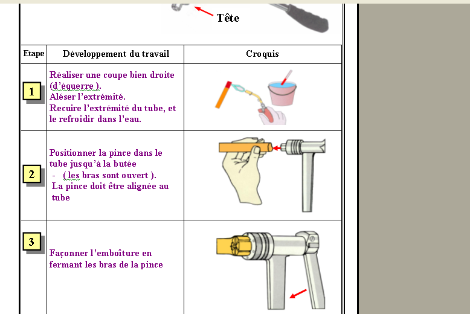
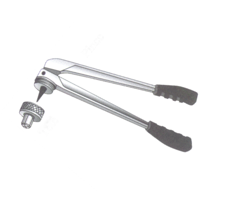

Thème / DomaineBrasage fort HP et électricité industrielle
Module atelier S5-F1 · 4 h × 2 passagesBrasage fort HP
SéquenceS5 · semaines 14-15
Nom________________
Prénom________________
Date (passage 1 / passage 2)_______ / _______
Positionnement01234
Mise en situation professionnelle
Ordre d'intervention n° OI-S5-1 : un commerce alimentaire de proximité prépare l'installation
d'une chambre froide dans son arrière-boutique. On change d'échelle par rapport au pavillon de
S3-S4 : les liaisons sont plus grosses, la tenue mécanique et la température de service l'exigent. Le
brasage tendre que vous avez appris en S3-F2 ne suffit plus pour cette installation : il faut
braser FORT les liaisons cuivre de la future chambre. La flamme HP (haute pression) ne se découvre
pas seul(e), elle se démontre : le professeur commence toujours par une démonstration commentée, avant
toute prise en main. Ensuite, vous progressez par des brevets validés dans l'ordre (carte de brevets en
annexe de ce document). Ce module se vit deux fois : passage 1 en semaine 14 (brevets 1 et 2 :
allumer/régler la flamme HP, puis chauffer au rouge sans percer) et passage 2 en semaine 15 (brevets 3
et 4 pour tous : déposer le métal d'apport par capillarité, puis réaliser l'assemblage complet du client).
Tâches
T10 Repérer, raccorder, assembler les réseaux fluidiques, aérauliques et électriques T12 Respecter les consignes de sécurité et protéger la zone de travail
Savoirs
Prérequis : gestes cuivre + brasage tendre (S1-S2, S3-F2), étanchéité à l'eau savonneuse (S3-F1) S6.2 Principaux risques et moyens de prévention augmenté (flamme HP)
Savoir-être
Rigueur face à un risque plus intense (flamme HP) · respect absolu des gestes interdits renforcés · honnêteté du contrôle avant brasage
Compétences (≤ 4)
Confortement → vers MaîtriseC3.4 Façonner, raccorder, assembler, isoler les circuits (frigorifique, hydraulique, aéraulique) ConfortementC2.4 Sécuriser l'intervention
Ce qui change depuis S3-F2 et depuis É2 — Jusqu'à S3-F2, vous brasiez
TENDRE (métal d'apport fondant sous 450 °C) : la marge d'erreur était plus confortable, la flamme
restait modeste. Aujourd'hui, on change d'échelle : le brasage devient FORT, la flamme est
HP (haute pression), et de nouveaux gestes interdits s'ajoutent à tout ce que vous savez déjà sur la
sécurité (notamment le risque de retour de flamme, qui n'existait pas en tendre). É2 est passée :
vos 2 objectifs de progrès personnels (posés en S5-T0) s'appliquent ici, particulièrement si vous étiez
positionné(e) 1 ou 2 sur C3.4 — vous reprenez d'abord un geste de brasage tendre avant d'attaquer le fort
(phase 4, exercice au fil de l'eau). Statut des deux compétences aujourd'hui : C3.4 Confortement → vers
Maîtrise, C2.4 Confortement — S5 ne comporte aucune Évaluation remontée (elle aura lieu en É3,
S6).
Passage 1 / Passage 2 — ce qui change
Passage 1 (semaine 14) — brevets 1 et 2, maîtrise de la flamme HP : après la démonstration commentée du
professeur, vous allumez et réglez vous-même une flamme HP à un poste en rotation (brevet 1), sous
supervision rapprochée. Puis, sur une chute de tube, vous chauffez au rouge sans percer (brevet 2) —
pas encore de métal d'apport, seule la maîtrise de la chauffe compte aujourd'hui. Passage 2 (semaine 15) — brevets 3 et 4, l'assemblage du client : sur une emboîture décapée, vous
déposez le métal d'apport par capillarité (brevet 3), que vous montrez au professeur AVANT
l'assemblage final — c'est une obligation, pas une option. Vous réalisez ensuite l'assemblage complet
OI-S5-1 (brevet 4) et vous contrôlez visuellement votre cordon. Moins de démonstration qu'au
passage 1, plus d'autonomie : c'est la pièce que le client attend réellement.
Objectifs — je serai capable de…
allumer et régler une flamme HP en sécurité (brevet 1) ;
distinguer le brasage tendre (< 450 °C) du brasage fort (> 450 °C), sans en connaître
encore la valeur exacte de flamme (selon la notice du matériel de l'atelier) ;
chauffer un tube au rouge sans le percer (brevet 2) ;
déposer le métal d'apport par capillarité sur une emboîture décapée, et le montrer au professeur
AVANT l'assemblage final (brevet 3) ;
réaliser un assemblage brasé fort qui tient, cordon contrôlé visuellement (brevet 4) ;
respecter la procédure de sécurité renforcée HP : EPI, gestes interdits, procédure retour de
flamme.
Prérequis — je sais déjà…
Ce n'est pas votre première séance avec une flamme : vous avez déjà brasé
tendre en S3-F2 (métal d'apport sous 450 °C), vous savez décaper, emboîturer un tube cuivre et
contrôler l'étanchéité à l'eau savonneuse (S3-F1). Vous connaissez déjà les gestes interdits de base
face à une flamme. Ce qui est nouveau aujourd'hui, c'est la flamme HP (plus intense), le
brasage FORT (température de chauffe plus élevée), et le risque de retour de flamme.
définir et réaliser un brasage tendre complet, cordon contrôlé (S3-F2) ;
contrôler l'étanchéité d'un circuit à l'eau savonneuse (S3-F1) ;
mes 2 objectifs de progrès posés après É2 (S5-T0), et où j'en suis.
Si un prérequis vous échappe encore,
signalez-le au professeur pendant l'exercice au fil de l'eau (phase 4), avant que la démonstration ne
commence : c'est exactement le sens du crochet de remédiation post-É2.
Matériel
Tube cuivre, plusieurs longueurs (chutes pour les essais, tube neuf pour l'assemblage OI-S5-1) —
diamètre et quantités selon le stock de l'atelier, à faire valider par le professeur
Poste de brasage HP (chalumeau oxy-combustible, bouteille d'oxygène + bouteille de gaz
combustible) — consommable, type et réglage selon l'équipement de l'atelier ;
l'oxygène est stocké à 200 bar (D'après INRS ED 742)
Dispositifs anti-retour de flamme, en place sur chaque poste (obligatoires, vérifiés avant
allumage)
Métal d'apport (baguette de brasage cuivre-phosphore, la plus courante pour un assemblage
cuivre-cuivre, D'après la fiche CCCA-BTP) (consommable) — alliage exact selon
la notice du produit utilisé à l'atelier, à faire valider
Flux décapant (consommable) — selon la notice du produit utilisé à
l'atelier, à faire valider
Tampon abrasif ou toile émeri (décapage mécanique avant brasage)
Outil d'expansion (pince à emboîture), déjà utilisé en S3-F2
Pare-flamme (protection d'un mur ou d'une surface proche du brasage, D'après la fiche CCCA-BTP)
Gants de soudeur (résistants à la chaleur, manchettes), tablier en cuir, chaussures de sécurité (× 1
jeu par élève, obligatoires)
Lunettes de protection à verres teintés, indice de teinte 4 à 7 (D'après fiche de poste CDG 50)
Extincteur et trousse de secours localisés au poste de brasage (vérifiés en phase 5)
Le brasage FORT (parfois appelé soudo-brasage) est un procédé
d'assemblage qui utilise un métal d'apport dont la température de fusion est supérieure à
450 °C (définition normalisée, la même limite que vous avez apprise en S3-F2 pour le brasage tendre — au
dessous de 450 °C, c'est tendre ; au-dessus, c'est fort). D'après la fiche procédure du CCCA-BTP, la
mise en œuvre suit toujours le même enchaînement : nettoyer les deux parties à assembler au tampon abrasif,
appliquer un flux décapant adapté, chauffer les pièces à une température d'environ 750 °C (coloration
rouge sombre), puis positionner la baguette de métal d'apport dans l'intervalle des pièces pour obtenir une
aspiration par capillarité ; enfin, laisser refroidir et nettoyer à l'eau le surplus de décapant. Le
métal d'apport le plus couramment utilisé pour un assemblage cuivre-cuivre est la brasure
cuivre-phosphore (D'après CCCA-BTP). Attention : une surchauffe détériore le tube — c'est
exactement ce que le brevet 2 vous apprend à éviter.
Question — Vous avez appris en S3-F2 que le brasage tendre utilise un
métal d'apport fondant sous 450 °C. Avec vos propres mots, expliquez ce qui distingue le brasage fort du
brasage tendre.

Le brasage par capillarité — le métal d'apport est aspiré dans l'intervalle
des deux tronçons chauffés. D'après : T.P Assemblage par brasure forte du tube cuivre, fiche atelier CAP
IFCA (C3-Réaliser, F. Henninot).
Sécurité renforcée — la flamme HP
Vous avez déjà travaillé avec une flamme en S3-F2. Aujourd'hui, la flamme est
HP (haute pression) : les risques déjà connus s'intensifient, et un risque nouveau apparaît, le
retour de flamme. Ces risques ne s'apprennent pas en tâtonnant : le professeur vous les démontre avant
toute prise en main.
Risque
Parade
Brûlure par un tube fraîchement brasé
Le tube reste chaud LONGTEMPS après l'extinction de la flamme. Gants de soudeur obligatoires ; ne jamais toucher un tube qui vient d'être brasé à main nue.
Brûlure ou projection par la flamme HP elle-même
Lunettes à verres teintés (indice 4 à 7) obligatoires pendant tout allumage, tablier de cuir. Ne jamais approcher son visage ou ses mains de la flamme.
Retour de flamme (nouveau par rapport au tendre) — le chalumeau « claque »
Dispositifs anti-retour de flamme en place sur chaque poste, vérifiés avant allumage. En cas d'incident : voir procédure d'urgence ci-dessous.
Explosion ou fuite au niveau d'une bouteille de gaz (l'oxygène est stocké à 200 bar)
Bouteilles DEBOUT et arrimées, jamais couchées ; vérification du poste avant tout allumage ; jamais de flamme à proximité d'une bouteille.
Incendie par contact avec un matériau gras ou inflammable
Jamais de graisse sur un détendeur d'oxygène ni sur les raccords du circuit d'oxygène (D'après INRS ED 742) ; poste dégagé de tout inflammable ; extincteur localisé et vérifié au rituel d'entrée.
Inhalation des fumées de flux ou de brasage
Ventilation du poste vérifiée avant d'allumer.
Chalumeau laissé allumé sans surveillance
Jamais poser un chalumeau allumé, même quelques secondes.
Gestes interdits — à respecter sans exception
Jamais de flamme dirigée vers un pair, même « pour rire » ;
Jamais de flamme à proximité d'une bouteille de gaz ;
Jamais de graisse sur un détendeur d'oxygène ni sur les raccords du circuit d'oxygène ;
Jamais de flamme pour détecter une fuite de gaz — seule l'eau savonneuse détecte une fuite
(D'après INRS ED 742) ;
Jamais toucher un tube qui vient d'être brasé à main nue ;
Jamais poser le chalumeau allumé, même un instant ;
Jamais coucher une bouteille de gaz : elle reste toujours debout.
Avant de commencer, complétez la fiche de sécurité à cocher ci-dessous
(EPI portés, poste dégagé, anti-retours de flamme vérifiés, extincteur et trousse localisés) et faites-la
viser par le professeur.
Fiche de sécurité à cocher — document CAP, F. Henninot.
🚨 Procédure d'urgence — retour de flamme — Si le chalumeau « claque » et
que la flamme ne réapparaît pas normalement à l'extrémité de la buse : fermez immédiatement le robinet du
gaz combustible en premier, puis celui de l'oxygène ; alertez le professeur sans attendre. Cette procédure
est sourcée INRS ED 742 (« en cas d'incident, dans tous les cas, commencez par fermer l'alimentation
en gaz combustible »). 🚨 Procédure d'urgence — brûlure : refroidir immédiatement la zone
touchée sous l'eau tempérée pendant 15 minutes, sans interrompre le refroidissement — règle standard de
premiers secours, à faire confirmer et affiner par le SST de l'établissement. Ne percez jamais une cloque,
n'appliquez jamais de corps gras. Alertez immédiatement le professeur.
Le professeur réalise devant vous, en commentant chaque étape, un allumage, un
réglage de flamme HP, une chauffe et un brasage fort complets. Vous n'avez pas encore de chalumeau en
main : vous observez et vous notez. Aucune question pendant que la flamme est allumée — vos questions
viennent juste après.
☐ 1. Vérification du poste (bouteilles debout et arrimées, anti-retour de flamme en place, extincteur à proximité)
☐ 2. Allumage du chalumeau HP (procédure du poste, rappelée par le professeur)
☐ 3. Réglage de la flamme (le dard doit rester net, sans décollement de la buse)
☐ 4. Chauffe uniforme du raccord jusqu'à la coloration rouge sombre
☐ 5. Avancée du métal d'apport au point le plus chaud, aspiré par capillarité
☐ 6. Retrait de la flamme dès que le cordon est complet, refroidissement sans y toucher
☐ 7. Rappel : azote interne — pourquoi l'intérieur du tube reste propre (démonstration uniquement, débit réglé par le professeur, selon notice)
Question — Parmi ces 7 étapes, laquelle vous semble la plus délicate à
réussir, et pourquoi ?
1Brevet 1 — « J'allume et je règle »
À votre tour, sous la supervision rapprochée du professeur, réalisez
l'allumage et le réglage de votre flamme HP à un poste de brasage en rotation. Vous ne chauffez pas encore de
tube : ce brevet valide seulement votre capacité à obtenir et régler une flamme correcte, en sécurité.
☐ 1. Vérifier le poste avant tout allumage (EPI portés, zone dégagée, anti-retour de flamme en place)
☐ 2. Allumer le chalumeau selon la procédure démontrée
☐ 3. Régler la flamme jusqu'à obtenir un dard net et stable
☐ 4. Éteindre le chalumeau selon la procédure (gaz combustible, puis oxygène)
Tableau de relevé — brevet 1
Allumage réussi du 1er coup ?
Dard net et stable ?
Extinction dans l'ordre correct ?
Conforme ?
☐ Oui ☐ Non
☐ Oui ☐ Non
☐ Oui ☐ Non
☐ Oui ☐ Non
Question — Pourquoi ne faut-il jamais poser un chalumeau allumé, même
un instant ?
Visa professeur — brevet 1
☐ Poste vérifié avant allumage ☐ Flamme réglée en sécurité ☐ Brevet 1 validé — autorisé(e) à poursuivre vers le brevet 2
PASSAGE 1 · SEMAINE 14 · JALON 2 — brevet 2 : chauffe au rouge sans percer — ≈ 70 min
2Brevet 2 — « Je chauffe au rouge sans percer »
Sur une chute de tube, à un poste de brasage en rotation, chauffez uniformément
le tube jusqu'à obtenir la coloration rouge sombre décrite par la fiche CCCA-BTP (température
d'environ 750 °C), sans percer ni brûler le tube. Vous n'utilisez pas encore de métal d'apport :
ce brevet valide votre maîtrise de la chauffe, avant de passer au dépôt du métal (brevet 3, réservé au
passage 2).
☐ 1. Vérifier le poste : zone dégagée, extincteur à proximité, EPI portés
☐ 2. Allumer et régler le chalumeau (brevet 1 déjà acquis)
☐ 3. Chauffer uniformément le tube, en déplaçant la flamme, jamais en un seul point fixe
☐ 4. Observer la coloration : elle doit devenir rouge sombre, uniforme
☐ 5. Retirer la flamme dès la coloration atteinte, avant tout risque de percement
☐ 6. Laisser refroidir sans y toucher — rappel : le tube reste chaud longtemps
Question — À quelle température, environ, doit-on chauffer les pièces
pour obtenir la coloration rouge sombre décrite par la fiche CCCA-BTP ? Cette valeur est-elle la même que la
température de fusion du métal d'apport ?
Tableau de contrôle — brevet 2
Coloration uniforme ?
Pas de percement ?
Pas de point noirci (surchauffe) ?
Conforme ?
☐ Oui ☐ Non
☐ Oui ☐ Non
☐ Oui ☐ Non
☐ Oui ☐ Non
Question de savoir-être — Vous avez chauffé un peu trop longtemps et
vous voyez un petit trou se former dans le tube. Que faites-vous : vous cachez la chute et vous en reprenez
une autre discrètement, ou vous le signalez au professeur ?
Bonne réponse attendue : on signale toujours
au professeur, même une chute d'essai ratée. Un frigoriste honnête montre ses erreurs d'apprentissage plutôt
que de les cacher : c'est ainsi qu'on progresse vraiment vers le brevet suivant.
Visa professeur — brevet 2
☐ Chauffe uniforme maîtrisée ☐ Aucun percement sur l'essai final ☐ Brevet 2 validé
PASSAGE 2 · SEMAINE 15 · JALON A' — brevet 3 : dépôt du métal d'apport — ≈ 60 min
Ce qui change par rapport au passage 1 — Aujourd'hui, tous les
élèves passent aux brevets 3 et 4 : plus une simple maîtrise de la chauffe, mais le geste complet de
brasage. Moins de démonstration (vous l'avez déjà vue), plus d'autonomie — mais une règle ne change
jamais : vous devez montrer votre dépôt de métal d'apport au professeur AVANT l'assemblage final.
Rappel — Sans regarder vos notes, quelle est la valeur au-dessus de
laquelle un métal d'apport doit fondre pour qu'on parle de brasage fort ?
3Brevet 3 — « Je dépose le métal d'apport (capillarité) »
Reprenez d'abord, si besoin, une emboîture décapée comme vous savez le faire
depuis S3-F2 (crochet de remédiation si vous étiez positionné(e) 1-2 sur C3.4 à É2 : refaites d'abord un
décapage soigné). Chauffez le raccord jusqu'à la coloration rouge sombre (brevet 2 déjà acquis), puis
présentez la baguette de métal d'apport au point le plus chaud : elle doit être aspirée par
capillarité tout autour du joint, pas « poussée » à la main.

Rappel — les 3 étapes de préparation de l'emboîture (déjà vues en S3-F2).
D'après : T.P Assemblage par brasure forte du tube cuivre, fiche atelier CAP IFCA (F. Henninot).
☐ 1. Vérifier le décapage de l'emboîture (surface propre, sans oxydation)
☐ 2. Appliquer le flux décapant
☐ 3. Chauffer uniformément jusqu'à la coloration rouge sombre
☐ 4. Présenter le métal d'apport au point le plus chaud : il doit être aspiré, pas poussé
☐ 5. Retirer la flamme dès que le cordon est complet, sans surchauffer

La pince à emboîture (outil d'expansion), déjà utilisée en S3-F2. D'après :
T.P Assemblage par brasure forte du tube cuivre, fiche atelier CAP IFCA (F. Henninot).
Tableau de relevé — brevet 3
Décapage vérifié ?
Métal d'apport aspiré (capillarité) ?
Cordon amorcé sans manque ?
Conforme ?
☐ Oui ☐ Non
☐ Oui ☐ Non
☐ Oui ☐ Non
☐ Oui ☐ Non
⚠ AVANT L'ASSEMBLAGE FINAL — Montrez votre dépôt de métal d'apport au
professeur. C'est une obligation, pas une option : on ne poursuit jamais vers l'assemblage complet sans ce
contrôle.
Visa professeur — brevet 3 (contrôle obligatoire avant l'assemblage final)
☐ Décapage conforme ☐ Métal d'apport correctement aspiré par capillarité ☐ Autorisé(e) à poursuivre vers le brevet 4
PASSAGE 2 · SEMAINE 15 · JALON B' — brevet 4 : l'assemblage OI-S5-1 — ≈ 65 min
Votre dépôt de métal d'apport validé, réalisez maintenant l'assemblage complet
des liaisons cuivre de la future chambre froide (ordre d'intervention OI-S5-1), à un poste de brasage en
rotation. Après le brasage, laissez refroidir sans toucher, puis contrôlez visuellement le cordon.
4Brevet 4 — « J'assemble et l'assemblage tient »
Ce brevet valide l'ensemble du geste : préparation, chauffe, dépôt du métal
d'apport, refroidissement et contrôle. C'est le geste complet que le client attend pour sa chambre froide.
Tableau de contrôle visuel — l'assemblage OI-S5-1
Cordon continu ?
Brillant ?
Sans manque ?
Sans surchauffe ?
Conforme ?
☐ O ☐ N
☐ O ☐ N
☐ O ☐ N
☐ O ☐ N
☐ O ☐ N
Question de savoir-être — Votre cordon vous semble « limite » — pas
franchement mauvais, mais pas net non plus. Que faites-vous : vous continuez en espérant que ça passe, ou
vous le signalez au professeur ?
Bonne réponse attendue : on alerte toujours
le professeur. Un frigoriste honnête signale un doute plutôt que de livrer une pièce non conforme, surtout sur
un assemblage définitif qui ne se refait pas facilement.
Pour aller plus loin (non noté aujourd'hui)
Vous savez depuis S3-F1 contrôler l'étanchéité d'un circuit à l'eau savonneuse.
Une fois votre assemblage brasé et refroidi, vous pouvez, si le temps le permet, re-contrôler votre
pièce avec cette méthode. Ce n'est pas évalué aujourd'hui, mais c'est exactement le geste qu'un frigoriste
réalise après un assemblage définitif — et c'est aussi une manière de vous préparer à S5-F2, où vous
découvrirez le montage d'essai sous azote de ce même type d'assemblage, avant l'épreuve officielle qui viendra
plus tard en S6.
Visa professeur — brevet 4 et assemblage complet
☐ Cordon conforme (continu, brillant, sans manque, sans surchauffe) ☐ Refroidissement respecté avant manipulation ☐ Brevet 4 validé — les 4 brevets sont acquis
☐ 1. L'assemblage OI-S5-1 est brasé, cordon continu, brillant, sans manque, sans surchauffe
☐ 2. La pièce a entièrement refroidi avant toute manipulation à main nue
☐ 3. Les 4 brevets sont visés sur ma carte de brevets (annexe)
☐ 4. Ma pièce est posée avec mon nom, prête à être présentée
Rangement et remise en état — spécifique au brasage HP
☐ 1. Éteindre le chalumeau (gaz combustible, puis oxygène) et vérifier qu'il est froid
☐ 2. Fermer les bouteilles de gaz du poste, vérifier qu'elles restent debout et arrimées
☐ 3. Vérifier qu'aucun tube brasé n'est encore chaud avant de quitter la zone
☐ 4. Trier les chutes de cuivre dans le bac de récupération
☐ 5. Nettoyer le poste, ranger l'outillage à sa place
☐ 6. Retirer les EPI en dernier, une fois le poste totalement sécurisé
Variantes — selon votre positionnement
Consolidation(fléchée remédiation É2 — élèves positionnés 1-2 sur
C3.4) : avant le brevet 2, reprise accompagnée d'un geste de brasage tendre (S3-F2) pour retrouver
la confiance dans le geste, puis passage au fort avec supervision renforcée à chaque étape. Standard : déroulement tel que décrit dans ce document, brevets 1-2 au passage 1, brevets 3-4 au
passage 2. Approfondissement(tutorat) : après validation de votre brevet 4, vous expliquez à un pair les 4
critères du contrôle visuel du cordon et le principe de la capillarité, sans jamais manipuler la flamme à sa
place.
Grille d'évaluation
Échelle FrigorX : 0 Non évalué · 1 Non acquis · 2 En cours
d'acquisition · 3 Acquis · 4 Parfaitement maîtrisé. Statut du jour : C3.4 Confortement → vers Maîtrise,
C2.4 Confortement — aucune Évaluation remontée dans S5 (l'évaluation É3 aura lieu plus tard, en S6).
Compétence / savoir-être
Ancrage
0 Non évalué
1 Non acquis
2 En cours
3 Acquis
4 Maîtrisé
C3.4 Façonner, raccorder, assembler, isoler les circuits (frigorifique, hydraulique, aéraulique)
sur T10 · S6.2
Compétence non observée ce jour.
Assemblage refusé au contrôle visuel (manque, surchauffe) et/ou percement lors de la chauffe, malgré aide ou reprise.
Assemblage conforme avec l'aide du professeur ou après une reprise.
Réalise seul(e) les 4 brevets : allumage/réglage, chauffe sans percer, dépôt du métal d'apport par capillarité, assemblage OI-S5-1 conforme (cordon continu, brillant, sans manque, sans surchauffe).
Comme « Acquis », et repère seul(e) un défaut sur son cordon avant de le présenter — vers la Maîtrise.
C2.4 Sécuriser l'intervention
sur T12 · S6.2
Compétence non observée ce jour.
Geste interdit commis (flamme vers un pair, flamme près d'une bouteille de gaz, graisse sur un détendeur d'oxygène, tube chaud touché à main nue, chalumeau posé allumé, bouteille couchée) : niveau 1 automatique.
Sécurité globalement respectée, quelques rappels nécessaires (EPI, zone dégagée, anti-retour de flamme).
EPI et gestes respectés sans rappel, poste vérifié avant chaque allumage, aucun geste interdit.
Comme « Acquis », et alerte spontanément un pair sur un risque qu'il n'a pas vu.
Savoir-être — sécurité, rigueur, honnêteté
observation continue
Non observé ce jour.
Geste dangereux ou précipitation qui compromet la sécurité : niveau 1 automatique.
Sécurité globalement respectée, quelques rappels nécessaires.
Applique les consignes sans rappel, montre son dépôt de métal d'apport avant l'assemblage final sans qu'on le lui demande.
Comme « Acquis », et signale spontanément un doute sur son propre cordon plutôt que de le livrer tel quel.
Ce document complété (les deux passages : relevés, dessins, questions répondues)
Carte de brevets (annexe) visée par le professeur, aux deux passages
Fiche de sécurité à cocher visée par le professeur, aux deux passages
Bon de commande hebdomadaire (tube, métal d'apport, flux, gaz)
D'après : T.P Assemblage
par brasure forte du tube cuivre, fiche atelier CAP IFCA 1re année (C3-Réaliser, F. Henninot,
2010-2011) — schémas et outillage restitués depuis cette source ; fiche procédure CCCA-BTP « Brasure forte »
(chauffe ≈ 750 °C, fusion > 450 °C, capillarité, cuivre-phosphore) ; INRS ED 742 « Soudage et coupage au
chalumeau » (pression de stockage de l'oxygène, gestes interdits, procédure retour de flamme) ; fiche de
poste CDG 50 « Utilisation d'un chalumeau » (EPI, indice de teinte des lunettes) ; règles chalumeau élève et
fiche chalumeau C6-Sécurité (risques et règles niveau CAP). Continuité directe des documents S3-F2 (brasage
tendre, même élève) et S3-F1 (étanchéité à l'eau savonneuse). Sources anciennes non extraites, à rouvrir
par le professeur si souhaité : « 5.CHALUMEAU OA.doc », « Le poste de soudage oxyacétylénique.doc » (4
versions), « brasure forte.doc » — aucun contenu de ce TP n'a été inventé à partir de ces sources illisibles.
L'alliage exact du métal d'apport et les réglages de flamme restent, comme annoncé, « selon la notice du
matériel de l'atelier, à faire valider par le professeur ».
Annexe — carte de brevets individuelle · S5-F1 · CAP IFCA 1A
Ma carte de brevets —
Brasage fort HP
À découper et à coller
dans mon carnet de bord F3. Chaque brevet se valide dans l'ordre, jamais dans le désordre : je ne passe au
brevet suivant qu'une fois le précédent visé par le professeur.
1« J'allume et je règle »
J'allume et je règle une flamme HP en sécurité, sous supervision, sur un poste
de brasage en rotation.
Visa : ________________ Date : ________________
2« Je chauffe au rouge sans percer »
Je chauffe uniformément un tube jusqu'à la coloration rouge sombre, sans le
percer ni le surchauffer.
Visa : ________________ Date : ________________
3« Je dépose le métal d'apport (capillarité) »
Je dépose le métal d'apport sur une emboîture décapée et chauffée, aspiré par
capillarité, et je le montre au professeur avant l'assemblage final.
Visa : ________________ Date : ________________
4« J'assemble et l'assemblage tient »
Je réalise un assemblage brasé fort complet (OI-S5-1), cordon continu, brillant,
sans manque, sans surchauffe.
Visa : ________________ Date : ________________
Méthode du module : démonstration commentée PUIS
parcours à brevets (charte pédagogique §1 — les gestes à risque se démontrent, ils ne se découvrent pas
seuls). Passage 1 (semaine 14) = brevets 1 et 2. Passage 2 (semaine 15) = brevets 3 et 4, pour tous.